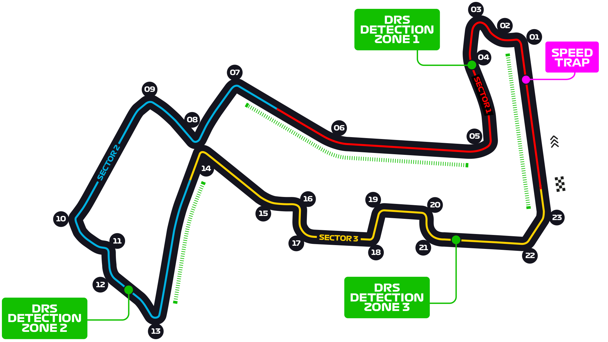

Cette entreprise a été crée par la grande la seule l’unique Cathy Martin et son collaborateur toujours de bonne humeur Mohamadou-Moustapha M’bow.
Notre entreprise à pour but d’organiser des courses d’escargot dans différents pays du monde pour offrir du divertissement a nos téléspectateur. Avec les différents résultats des différentes courses un classement final a la fin de la saison est défini. Cela permet de rajouter de la compétitivité est une récompense est donner au trois premier du classement final. Mais nous ne sommes pas seulement organisateur de course, nous créons et vendons des turbo pour les différents type d’escargot. Vous pouvez acheter ou personnaliser votre turbo comme vous le souhaitez .
Cette entreprise n’a pas seulement comme but de divertir, les différents circuit de la saison sont composer de générateur permettant de stocker l’énergie fournie par les escargot pendant la course et a générer de l’électricité permettant de ravitailler 30% de la population ou se déroule la course.

Le circuit de Spa-Francorchamps situé en Belgique et le circuit le plus équilibré entre vitesse est endurance. Constituer de lignes droites assez importante mais aussi de virage rapides ce circuit est le plus équilibre Car malgré les nombreuses ligne droites ce circuit est le plus long de la saison . Il faudra certes une vitesse de pointes importante pour les lignes droites mais il faudra tenir toute la course car ce circuit comporte 18 virages.
- Roman Reigns : Turbo vitesse
- Seth Rollins : Turbo néon 2000
- Dean Ambrose : Turbo de la flemme
Le circuit de Monza situer en Italie est le circuit le plus rapide. Ce circuit est souvent renommer le temple de la vitesse ,constituer de seulement 11 virages et des lignes droites interminables, les turbo avec une forte vitesse de pointe sont souvent favoriser. Ce corcuit offre plusieurs opportunités de dépassement cela garanti un spectacle digne de son nom aux téléspectateurs.
- Teddy Thomas : Turbo boost 3000
- Cheslin Kolbe : Turbo boost 3000
- Juan Imhoff : Turbo vitesse
Le circuit de Singapour et le Circuit le plus lent du calendrier. Constituer se 23 virages et quelques lignes droites ce circuit est le plus endurants de la saison. Il faudra une excellente endurance mais aussi de l’appui aérodynamique pour gagner du temps dans les nombreux virages.
- Ladybug : Turbo néon 2000
- Garfield : Turbo de la flemme
- Oggy : Turbo néon 2000